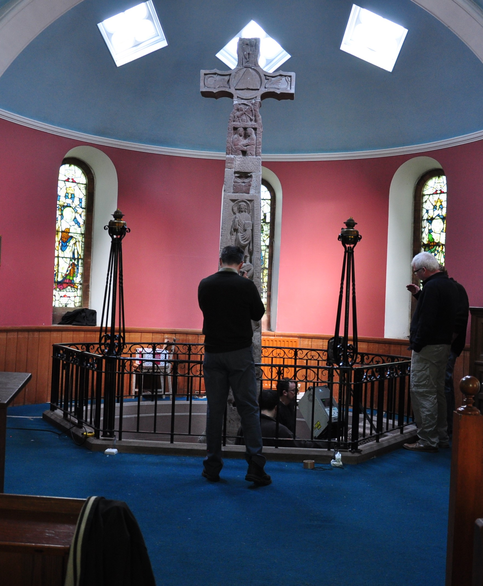

History of the Project
Visionary Cross: a multimedia edition and archive is a critical edition, scholarly study, and textual archive of the Old English Visionary Cross Tradition. The Visionary Cross project is an international, multidisciplinary research project whose principle objective is the development of a new kind of digital archive and edition of texts and objects associated with the Visionary Cross tradition in Anglo-Saxon England.
ISTI-CNR collaborated with the partners of the project in two main activities: the acquisition and processing of the 3D representation of two important stone crosses (Ruthwell and Bewcastle), and the creation of a web accessible "digital edition" of the Cross, available to both the genarl public and the scholars.